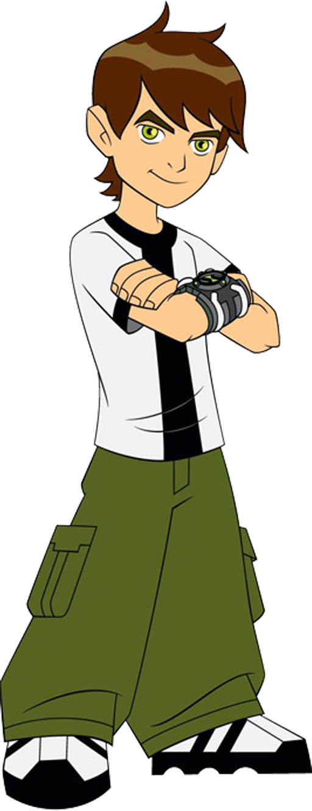

Ben 10
Aos 10 anos de idade, Benjamin Kirby Tennyson descobre um dispositivo alienígena na floresta chamado de Omnitrix, que lhe permite se transformar em 10 diferentes espécies alienígenas. Ao longo de suas férias de verão, viajando o país num trailer com seu avô Max e com a sua prima Gwen, Ben luta contra o crime e alienígenas do mal com seus novos poderes, adquirindo a capacidade de se transformar em mais nove novos alienígenas ao longo do caminho.
